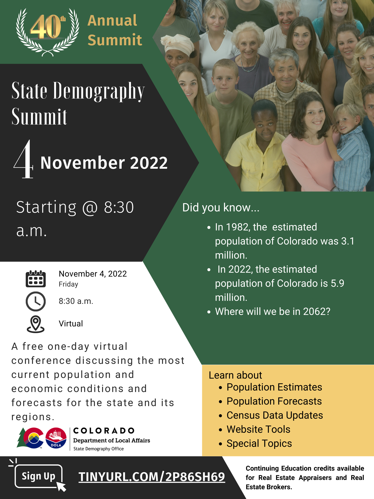

State Demography Summit
The Colorado State Demography Summit is held in the Fall of each year.
This one-day conference offers attendees the opportunity to learn about the most current population and economic conditions and forecasts
for the state and its regions and what is driving these changes.
Registration details are announced in SDO's Monthly Newsletter.
|  |
Please complete the State Demography Summit Evaluation
The 2022 State Demography Summit was held virtually on Friday, November 4, from 8:45 a.m.to 4:00 p.m. This one-day conference offers attendees the opportunity to learn about the most current population and economic estimates and forecasts for the state and its regions. The morning sessions will cover the economic and population conditions and outlook for the state and their implications. The afternoon session will dig deeper into data tools, data reliability, and data definitions.
|